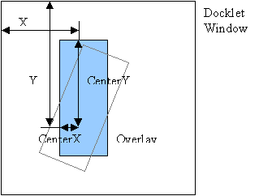
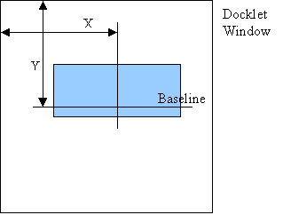
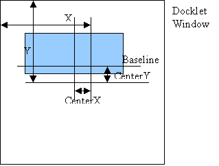

Scripts
SysStats allows you to write your own meters and controllers using any script language that supports the Windows Script Host mechanism. Typically this means VBScript.
This document documents how SyStats interfaces to such a script – what functions it expects to find and what objects and functions the script can call to control SysStats.
Add a ScriptMeter using the ‘Configure meters…’ dialog and configure it by selecting the script and specifying its type – if you ever need to reload the script (if you edit the script for example) you will have to re-select the same file to get SysStats to re-load it.
SysStats communicates with a script meter through three pre-defined functions:
ScriptMeter_Update()
ScriptMeter_GetValue(selector)
ScriptMeter_PutValue(value)
Any given script can use any, all or none of these functions as it sees fit. In addition to these functions a script can define whatever other functions it likes – it is just these three functions that have a special meaning to SysStats.
ScriptMeter_Update()
This is called every interval seconds as set in the Configure meters… dialog. It should return true if the value of the meter has changed since it was last called, false otherwise.
ScriptMeter_GetValue(selector)
This is called whenever SysStats wants to get the latest value of the meter. This is not necessarily when ScriptMeter_Update() returns true – SysStats may need to retrieve the value for other reasons.
Selector is a string that is passed in by whatever overlay is trying to render it. Normally this value is set via the overlay’s configuration dialog. The script can use it however it likes – including totally ignoring it.
The value returned by the function can be:
· A string
· An integer
· A float
It is up to the calling overlay to render the value properly.
ScriptMeter_PutValue(value)
This is typically called by a ValueSetter controller, though it could be called by another script.
So. One possible VB script would be:
myValue = 0
‘ Increment the value
Function ScriptMeter_Update
myValue = myValue + 1
‘We always have a new value!
ScriptMeter_Update = true
End Function
‘ Return the current value
Function ScriptMeter_GetValue(selector)
ScriptMeter_GetValue = myValue
End Function
‘ Set the value
Function ScriptMeter_PutValue(newVal)
myValue = newVal
End Function
In addition to a script being called by SysStats, a script can call SysStats. SysStats makes all of its objects available to a script in a structured fashion – this is often referred to as a ‘Document Object Model’. If you’ve ever scripted a web page, you will probably already have come across one DOM.
There are two flavors: Synchronous and Asynchronous. If you use a synchronous script controller SysStats waits for its HandleMessage() function to complete. If you use an ASyncScriptController SysStats will not wait for the function to complete.
A script controller is a controller that you write in a scripting language such as VBScript.
SysStats communicates with a script controller through one pre-defined function:
ScriptController_HandleMessage(wparam, lparam, x,
y)
The arguments are the windows message wparam and lparam values and the x and y location of the mouse pointer relative to the docklet’s window. See Microsoft’s documentation on these for complete descriptions.
The return value should be true if you want to stop any further processing of the message by the docklet. False otherwise.
There are two flavors: Synchronous and Asynchronous. If you use a synchronous script controller SysStats waits for its HandleMessage() function to complete. If you use an ASyncScriptController SysStats will not wait for the function to complete.
This is one of two global objects that SysStats makes available to scripts. This one mimics some of the functionality of Microsoft’s WScript object. Namely:
ConnectObject(object, prefix)
This connects the event methods of an existing COM object to the script using the passed prefix.
Disconnect(object)
This disconnects a previously connected object.
DisconnectAll()
This disconnects all objects previously connected with ConnectObject().
Echo(string)
This echos a single string to the script’s console. This can be useful for debugging!
The ‘root’ of SysStat’s DOM is the ClientModel. You can access this object using a variable called SysStatsModel: Here’s an example:
Value = 0
Function ScriptMeter_Update
‘We always have a new value!
ScriptMeter_Update = true
End Function
‘ Return the previous value + 1 and rotate the overlay
‘ at position 0 by value degrees clockwise.
Function ScriptMeter_GetValue(selector)
Value = Value + 1
ScriptMeter_GetValue = Value
SysStatsModel.Overlays(0).Rotation = Value
End Function
The key to using SysStat’s ClientModel is knowing your way around it.
The client model holds all of the overlays, meters and controllers for a single instance of SysStats (or, for a single config, which amounts to the same thing):
Meters
This is an collection of all of the meters in this config. The collection can be indexed by number or name. Numerical indices always start at 0. So SysStatsModel.Meters(0) will return you the first meter in the list. SysStatsModel.Meters(“first”) will return you the meter called first (or the first one in the list with that name if you have several with the same name!).
Overlays
This is a collection of all of the overlays in this config. The collection can be indexed by number or name. Numerical indices always start at 0.. So SysStatsModel.Overlays(0) will return you the first overlay in the list. SysStatsModel.Overlays(“first”) will return you the overlay called first (or the first one in the list with that name if you have several with the same name!).
If you’ve looked at some of the existing configs you might have noticed that overlays can be nested inside other overlays so SysStatsModel.Overlays(0) might return you another collection of overlays, which might return another collection of overlays etc. etc.. A script should know what to expect.
NOTE: This is in fact just one example of polymorphism: Although each type of overlay (and each type of meter for that matter) all share a common set of properties and functions, they can also have extra properties and functions too – specific to their own type. I’ll go into all of the properties and functions of each type a little later. But for now lets continue with the client model itself:
Controllers
Another collection (but you guessed that right?). This time of controllers (you probably guessed that too). The collection can be indexed by number or name. Numerical indices always start at 0. So SysStatsModel.Controllers(0) will return you the first controller in the list. SysStatsModel.Controllers(“first”) will return you the controller called first (or the first one in the list with that name if you have several with the same name!).
NOTE: SysStatsModel.Models(0) is in fact shorthand for: SysStatsModel.Models.Item(0). You see, collections have their very own properties too. You can get their size, and you can add elements to them. More on this later. Lets continue with the client model!
Label
This is an object that represents the label.
AppConfig
This object holds some configuration information for the model itself and provides some useful filepath manipulation functions.
Dirty
This is a simple Boolean value. If it is set to true SysStats will render all of the overlays. You can get it or set it. You might set this if you do some work using a timer, for example, and want to force SysStats to re-render the overlays afterwards.
X
The X location of the window. This is ignored in ObjectDock and YzDock.
Y
The Y location of the window. This is ignored in ObjectDock and YzDock.
Width
The width of the window.
Height
The height of the window.
Name
The name of the docklet.
Description
The description of the docklet.
Version
The version of the docklet.
Author
The author of the docklet.
ConfigFile
The config file for this docklet.
hWnd
The handle to the window for this docklet.
UpdateMeters()
Calling this method is like selecting Update… from the context menu – it will call the Update method of every meter.
PostMessage(messageID, wParam, lParam)
This method will post the passed message onto the windows message queue for this docklet.
Load()
Load the config for this docklet.
Save(bool interactive)
Save this docklet. If interactive is true the docklet may open a confirmation dialog.
When something can have more than one value it is held in a collection. You can get at an entry in an collection using two techniques. Taking SysStatsModel.Overlays as an example, the following two statements will both return the entry at index 1:
SysStatsModel.Overlays(1)
SysStatsModel.Overlays.Item(1)
You can also get the number of entries in a collection using the Count() method. For example the following code retrieves the number of entries in the meters collection:
SysStatsModel.Meters.Count
You can also add and remove entries from a collection using the Add() and Remove() entries. Add() takes a single argument – the element to be added. Remove also takes a single argument – the index of the element to be removed.
Label is accessed as SysStatsModel.Label.
Label has the following properties and functions:
Format
If the label has no meter associated with it, this will be the string that is displayed for the label.
If the label does have a meter associated with it, the meter will be called to return a value and that value might be used to make up the label. For example if the Format is ‘%d’ and the meter returns an integer that integer will be displayed in the label. If the Format is ‘This is a label’, it won’t matter what the meter value is – it won’t be displayed – the label will always read ‘This is a label’.
MeterIndex
An index into the collection of meters. This is the meter that will be called when rendering the label. A value of –1 means no meter.
selector
A string that will be passed to the meter when it is called to return a value. Its meaning depends on which meter is being called – most don’t use it.
GetLabel()
This will return the label string as it would be displayed, i.e. it will call any meter associated with the label and format the result.
Meters are held in a collection
indexed from 0 and are accessed as SysStatsModel.Meters(n) - where n
is the index of the meter, or as SysStatsModel.Meters(name)
– where name is the name of the
meter.
All meters share the properties and methods defined by Meter. In OO-speak, they inherit Meter.
GetAsLong(selector)
Returns the current value of the meter as a long integer.
Selector is a string that the meter can interpret any way it likes. Different types of meter (or sub-classes in OO-speak) will define how they interpret this value. It is typically used to select one value from several that the meter might hold – most meters only hold one value so most meters ignore this.
GetAsDouble(selector)
Returns the current value of the meter as a double.
See GetAsLong() above for an explanation of selector .
GetAsString(format, selector)
Returns the current value of the meter as a string.
Format is a string that the meter can interpret any way it likes. Different types of meter (or sub-classes in OO-speak) will define how they interpret this value. This will be described later for each type of meter.
See GetAsLong() above for an explanation of selector .
GetValue()
Returns the value of the meter as a variant. The type of the return value (integer, float, string etc.) will depend on the type of the meter.
This is also the default method for a meter – which will be explained below.
So we could use:
‘ Just return the value of the first meter:
Function ScriptMeter_GetValue(selector)
DIM meter
Set meter = SysStatsModel.Meters(0)
‘ This will call GetValue() on the meter:
ScriptMeter_GetValue = SysStatsModel.Meters(0)
‘ So will this:
ScriptMeter_GetValue = meter.GetValue()
` So will this:
ScriptMeter_GetValue = meter
‘ This will return a string value from a time meter:
ScriptMeter_GetValue = meter.GetAsString(“%H”, selector)
` This will return an integer value:
ScriptMeter_GetValue = meter.GetAsLong(selector)
` This will return a double value:
ScriptMeter_GetValue = meter.GetAsDouble(selector)
End Function
There are other methods and properties you can call too:
Update()
This may cause the meter to update its value – some meters update themselves independently, e.g. MBMMeter or TimeMeter .
It returns true if the value has changed since the last time Update was called.
Name
Is the name displayed in the ‘Configure meters…’ dialog.
Type
Is the type of the meter. e.g. a PDH meter has a type of ‘PDHMeter Class’.
Interval
This is the number of seconds that SysStats will wait between calling the Update() method. A value of 0 means that SysStats will never call the Update() method.
DiskMeter is used to measure the space of a disk or partition. A meter of type DiskMeter adds three properties to those defined by Meter.
Path
Path is the path of the disk whose space will be monitored, e.g. C:
Selector
This is an integer that specifies what exactly should be monitored:
0 - % space used.
1 - % space free.
2 – Number of bytes used.
3 – Number of bytes free
4 – Total size in bytes
Scale
This is a value that specifies a scale factor for the value the meter returns. The value is divided by this number – for example a scale of 1024, coupled with a selector of 2 will cause the meter to return the number of kilobytes used.
FixedMeter is used to hold an unchanging value. A meter of type FixedMeter adds a single property to those of Meter:
Value
This is the value that is to be stored. It should be a string (note that this doesn’t mean that it will be interpreted as a string by an overlay).
MBMMeter is used to access values monitored by MBM. A meter of type MBMMeter adds three properties to those of Meter.
Index
This is the index of the probe being monitored.
Reading
This is an integer specifying exactly which value to return for the probe. It can be one of:
0 – the current value.
1 – the all-time-low value.
2 – the all-time-high value.
Scale
This is a value that specifies a scale factor for the value the meter returns. The value is divided by this number.
MemoryMeter is used to monitor RAM. A meter of type MemoryMeter adds two properties to those of Meter.
Selector
This is an integer that specifies what exactly should be monitored:
0 - % space used.
1 - % space free.
2 – Number of bytes used.
3 – Number of bytes free
4 – Total size in bytes
Scale
This is a value that specifies a scale factor for the value the meter returns. The value is divided by this number – for example a scale of 1024, coupled with a selector of 2 will cause the meter to return the number of kilobytes used.
PDHMeter is used to monitor values using the Performance Data Helper APIs, through which a wide range of system performance metrics can be monitored. A meter of type PDHMeter adds two properties to those of Meter.
Counters
This is an array of strings that define what should be monitored. The format of these string is defined here. For example \Processor(_Total)\% Processor Time specifies the CPU usage.
Although this is an array, only the first entry is ever used by PDHMeter .
Scale
This is a value that specifies a scale factor for the value the meter returns. The value is divided by this number
ScriptMeter is used to execute a script supported by the windows scripting host (e.g. vbscript) as if it were a meter. See also here for more information. A meter of type ScriptMeter adds the following properties to those of Meter:
FileName
This is the path to the file containing the script.
ScriptType
This defines the script language. This can be one of:
JavaScript
Perl
ActivePHP
Python
RubyScript
vbScript
Value
If you set this property to a value the method ScriptMeter_PutValue(value).
TimeMeter is used to monitor the time.
If the string value of a TimeMeter is accessed, the GetValue function requires a format string as defined here.
If a numeric value is accessed – the number of seconds since midnight is returned.
TimeZone
A long list of possible timezones culled from the following registry entry: LOCALMACHINE\SOFTWARE\Microsoft\Windows NT\CurrentVersion\Time Zones
TZDescription
A description of the timezone.
XMLMeter is used to retrieve an XML document and access values in it. A meter of type XMLMeter adds seven properties to those of Meter. All but the first of these require you to install MSXML4 on your computer. Do yourself a favor and install it J.
URL
The URL of the XML document.
Username
A username that can be used if the URL requires a username/password
Password
A password that can be used if the URL requires a username/password
ProxyURL
The URL of a proxy server – this might be required if you are behind a firewall.
ProxyUsername
A username that can be used if the proxy server requires a username/password
ProxyPassword
A password that can be used if the proxy server requires a username/password.
UseXPath
If true this will force the XML meter to use true xpath expressions. This may require that you define namespaces for the query.
NameSpaces
This is an array of strings defining namespaces in the XML document for use by XPath. These are only used if UseXPath is set to true. An example namespace definition is:
xmlns:a="http://purl.org/atom/ns#"
The namespace a can then be used in subsequent Xpath expressions such as:
format-number(count(//a:entry), '#')
Value
This attribute can be set to an XML document that is then used as the source for all of the other operations.
IXMLDOMNodeList *GetNodeList(String Xpath)
This method executes the passed Xpath expression and returns a nodelist.
When obtaining a value from an XMLMeter you need to provide a selector in the format of an XPath expression.
The mail meter is used to retrieve inbox information from MAPI mail clients such as Outlook and OutlookExpress. It adds the following properties to those of meter.
Username
If SysStats needs to authenticate it will use this username.
Password
If SysStats needs to authenticate it will use this password.
ValidDays
Mail message older than this value (in days) will not count as part of the value of the meter.
The animation meter is used to provide state information to animated overlays (or anything else that requires an animation state I guess). It adds the following properties and methods to those of meter:
FrameCount
The number of frames in the animation.
FrameRate
The rate in frames/sec of the animation.
PlayState
The current state of the animation – playing, paused etc. If you set the value it will force the animation into that state. This is how the animation is started/stopped etc.
Position
The current position of the animation. Start, end etc.
Loop
If true the animation should loop when it reaches the end.
AutoReverse
If true the animation will reverse after reaching either end.
SingleStep
If true the animation will pause after each frame.
PutValue(String selector, BSTR value)
This single method can be called to set a value specified by the selector to the passed value.
The selector can be one of:
· framerate
· framecount
· loop
· autoreverse
· singelstep
· autostart
· playstate
· position
· currentframe
· framedelta
· step
Step()
Call this method to step the animation to the next frame.
AutoStart
If true the animation will start playing when SysStats loads.
StateMsg
This is a windows message that should be posted when the playstate of the animation changes.
StateLParam
This is the value of the LParam that should be passed with the message. WParam will be the new state and position of the animation.
Overlays are held in an collection indexed from 0 and are
accessed as SysStatsModel.Overlays(n). Where n is the index of
the overlay. Some of the overlays retrieved may themselves be a collection.
All overlays share the properties defined by Overlay. In OO-speak, they inherit Overlay.
Name
Is the name displayed in the ‘Configure meters…’ dialog.
Type
Is the type of the overlay. e.g. an image overlay has a type of ‘ImageOverlay Class’.
MeterIndex
The index of the referenced meter in the list of meters. A value of –1 means no meter.
Visible
If this is false then the overlay will not be drawn. In fact, because it won’t be drawn it won’t get a chance to get the value of a meter. So if you set an overlay’s visibility to false in ScriptMeter_GetValue() , make sure that it isn’t the overlay that called ScriptMeter_GetValue() in the first place, or you might never get a chance to set it to true again.
Mode
The combination mode used when compositing the image. Ignored in this version of SysStats.
SimpleOverlay is the base class for all of the overlays provided with SysStats. It adds the following properties to those defined by Overlay:

X
The x-coordinate in the docklet’s window at which the center of the overlay will be rendered.
Y
The y-coordinate in the docklet’s window at which the center of the overlay will be rendered.
Rotation
The angle in degrees running clockwise from 3 o’clock at which the overlay will be rendered. The overlay is rotated about its center.
CenterX
The x-coorindate of the center of the overlay measured from the top-left corner of the overlay itself.
CenterY
The y-coorindate of the center of the overlay measured from the top-left corner of the overlay itself.
HAlign
Some overlays do not have a fixed size (e.g. the TextOverlay). In that case this value is used to specify how the overlays boundaries should grow in the horizontal direction.
0 – Left Aligned: The left boundary is fixed – grow only to the right.
1 – Center Aligned: Grow equally to the left and right.
2 - Right Aligned: The right boundary is fixed – grow only to the left.
VAlign
Some overlays do not have a fixed size (e.g. the TextOverlay). In that case this value is used to specify how the overlays boundaries should grow in the vertical direction.
0 – Top Aligned: The top boundary is fixed – grow only down the ways.
1 – Middle Aligned: Grow equally up and down.
2 - Bottom Aligned: The bottom boundary is fixed – grow only upwards.
HScale
A scale factor for the horizontal direction. 1.0 = no scaling. The horizontal axis rotates with the overlay.
Vscale
A scale factor for the vertical direction. 1.0 = no scaling. The vertical axis rotates with the overlay.
Selector
A value used by some meters to select one from many possible values.
SimpleOverlay2 adds some extra features to those of SimpleOverlay:
bool HitTest(int X, int Y)
This method returns true if the pixel addressed by the passed X and Y value has a non-zero alpha channel (i.e. if the pixel is opaque).
Parent
This property holds a reference to the containing composite overlay (if any). If there is no parent, it holds NULL. The value should be treated as read-only.
EffectOverlay
This property holds a reference to an overlay that is used for masking this overlay.
EffectOverlayEffect
This defines how the effect overlay is used. It can be one of:
0 = Mask out
1 = Mask in
GaugeOverlay draws a dial whose angle is determined by the value of a meter. An overlay of type GaugeOverlay adds the following properties to those defined by SimpleOverlay2, SimpleOverlay and Overlay:
Length
This is the length of the line drawn.
Thickness
This is the thickness of the line.
Span
This is the maximum number of degrees that the gauge can rotate.
Min
This is the meter value that is represented by a rotation of zero.
Max
This is the meter value that is represented by a rotation of Span degrees.
Color
This is the color of the line in BGR form! I.e. 0x00FF0000 is blue, 0x0000FF00 is green. 0x000000FF is red.
Alpha
This is the transparency of the line from 0 to 255 with 0 being totally transparent and 255 being totally solid.
ImageOverlay draws an image into the window. An overlay of type ImageOverlay adds the following properties to those defined by SimpleOverlay2, SimpleOverlay and Overlay:
Path
This is the pathname of the image.
Alpha
This is the transparency of the image from 0 to 255 with 0 being totally transparent and 255 being totally solid. This is in addition to any per-pixel transparency that the image may have.
ImageWidth
This is a read-only property giving the width of the source image in pixels. Note that the image drawn may differ if a scale factor is being used.
ImageHeight
This is a read-only property giving the height of the image in pixels. Note that the image drawn may differ if a scale factor is being used.
long GetPixelValue(int X, int Y)
This returns the value of the pixel at the given location.
Dispose()
ImageMeter caches the image. This will make it impossible to change the file containing the image. Calling this method causes the file to be released.
AnimationMeter
This is a reference to an AnimationMeter that can be used to control the animation of a multi-frame image.
HueShift
This is a value between –180 and 180 that is used to shift the hue of an image. The default of 0 means no hue shift.
Saturation
This is a value between 0 and 3 that controls the saturation of an image. A value of 0 will give a grey-scale image. The default value of 1 will leave the saturation unaltered.
MeterOverlay draws a bar whose length is determined by the value of a meter. An overlay of type MeterOverlay adds the following properties to those defined by SimpleOverlay2, SimpleOverlay and Overlay:
Length
This is the maximum number of pixels a meter can extend to. Depending on the value of a meter the MeterOverlay will extend from 0 to Length pixels.
Thickness
This is the thickness of the bar in pixels.
Min
This is the meter value that is represented by a zero length bar.
Max
This is the meter value that is represented by a bar of Length pixels.
Color
This is the color of the bar in BGR form! I.e. 0x00FF0000 is blue, 0x0000FF00 is green. 0x000000FF is red.
Alpha
This is the transparency of the bar from 0 to 255 with 0 being totally transparent and 255 being totally solid.
TextOverlay draws a string. The size of an image rendered by a text overlay is not known until it is drawn, thus the HAlign and VAlign properties of SimpleOverlay are used to specify how the position of the image is adjusted as the size changes. Essentially the X location of the image is used as either the left, center or right of the drawn image and the Y location of the image is used as either the top, middle or bottom of the image.
The diagram below shows how text would be drawn if HAlign were set to center and VAlign were set to middle. Note that the vertical ‘middle’ is actually the baseline of the text., not the actual middle in pixel terms.

The picture is complicated a little if CenterX and CenterY are non-zero:

A meter of type TextOverlay adds the following properties to those of SimpleOverlay2, SimpleOverlay and Overlay:
Format
This determines the string that will be displayed. The format of this string is define here.
FontName
The name of the font face, e.g. ‘Arial’.
FontStyle
The font style, e.g. ‘Italic’.
FontSize
The font size.
FontColor
This is the color of the text in BGR form! I.e. 0x00FF0000 is blue, 0x0000FF00 is green. 0x000000FF is red.
Alpha
This is the transparency of the bar from 0 to 255 with 0 being totally transparent and 255 being totally solid.
Radius
This specifies a glow radius for the text.
BlurColor
Specifies the color of the glow in BGR form!
Width
If this is > -1 it specifies a clipping width for the text. This is also used to wrap the text if Wrap is set to true.
Height
If this is > -1 it specifies a clipping height for the text.
Wrap
If this is true and a clipping width is specified the text will be wrapped to fit inside the width.
AlternateRender
If this is true the following properties can be used to change how the text is drawn:
TextRenderingHint
This changes the anti-aliasing. It can be one of:
0 = Default (use system setting)
1 = No AntiAlias Grid Fit
2 = No AntiAlias
3 = AntiAlias Grid Fit
4 = AntiAlias
5 = ClearType
TextContrast
This should be a value between 1 and 8. Though it doesn’t seem to make any difference anyway!
CompositeOverlays can contain other overlays. They behave like collections to scripting languages, so they can be indexed, entries can be added and entries can be removed.
Any type of overlay can be contained, including other CompositeOverlays.
CompositeOverlay inherits all of the methods of SimpleOverlay2, SimpleOverlay and Overlay.
A MappedOverlay is a special sort of ImageOverlay. It displays an image using a Map to control what portion of the main image is visible. This is all explained here.
MappedOverlay inherits all of the methods of SimpleOverlay2, SimpleOverlay and Overlay.
Min
This should be set to the minimum value of the meter being monitored. Often this is 0.
Max
This should be set to the maximum value of the meter being monitored.
MapPath
This is the pathname of the map.
ImagePath
This is the pathname of the image.
Alpha
This is the transparency of the image from 0 to 255 with 0 being totally transparent and 255 being totally solid. This is in addition to any per-pixel transparency that the image may have.
ImageWidth
This is a read-only property giving the width of the source image in pixels. Note that the image drawn may differ if a scale factor is being used.
ImageHeight
This is a read-only property giving the height of the image in pixels. Note that the image drawn may differ if a scale factor is being used.
long GetPixelValue(int X, int Y)
This returns the value of the pixel at the given location.
Dispose()
MappedMeter caches its images. This will make it impossible to change the files containing the images. Calling this method causes the files to be released.
HueShift
This is a value between –180 and 180 that is used to shift the hue of an image. The default of 0 means no hue shift.
Saturation
This is a value between 0 and 3 that controls the saturation of an image. A value of 0 will give a grey-scale image. The default value of 1 will leave the saturation unaltered.
A scroller overlay is a special sort of composite overlay. It adds the following methods and properties to those of CompositeOverlay.
Alpha
This is the transparency of the image from 0 to 255 with 0 being totally transparent and 255 being totally solid. This is in addition to any per-pixel transparency that the image may have.
dx
This is the amount that the x coordinate of the contained image should change with each frame.
dy
This is the amount that the y coordinate of the contained image should change with each frame.
SmoothScrollMeter
This is a reference to an AnimationMeter that can be used to implement a smooth scroll between frames.
DupliateLastFrame
This is used for animations that wrap around. Setting it to true will ensure that the scroller displays correctly when the scroll wraps around.
The Animator overlay is used to in-between a source image and a destination image. It adds the following methods to those of SimpleOverlay2, SimpleOverlay and Overlay.
Alpha
This is the transparency of the image from 0 to 255 with 0 being totally transparent and 255 being totally solid. This is in addition to any per-pixel transparency that the image may have.
AlphaEnd
The desired end transparency.
XEnd
Specifies the X coordinate for the image at the end of the animation period.
YEnd
Specifies the Y coordinate for the image at the end of the animation period.
CenterXEnd
Specifies the X coordinate for the image center at the end of the animation period.
CenterYEnd
Specifies the Y coordinate for the image at the end of the animation period.
RotationEnd
Specifies the rotation for the image at the end of the period.
VScaleEnd
Specifies the end VScale at the end of the animation.
HScaleEnd
Specifies the end HScale at the end of the animation.
Controllers are held in a collection indexed from 0 and are accessed as SysStatsModel.Controllers(n). Where n is the index of the controller.
All controllers share the properties and methods defined by Controller. In OO-speak, they inherit Controller. Controllers are not a fully integrated feature in this version of SysStats so you should use them with caution.
Name
Will be the name displayed in the ‘Configure meters…’ dialog.
Type
Is the type of the controller. e.g. a shortcut controller has a type of ‘Shortcut Class’.
The index of the referenced meter in the list of meters. A value of –1 means no meter.
OverlayPath
A variant array holding a set of overlay names that identify the overlay the mouse pointer has to be over for the controller to be triggered.
MessageType
An integer giving the windows message that this controller is triggered by. Some controllers don’t use this value (e.g. Timer and DropTarget).
Key
A modifier key mask that can be used in combination with a mouse message type to further refine the trigger.
PassThrough
If true the controller should return false from its HandleMessage() method.
HandleMessage(wparam, lparam, x, y)
This function takes four arguments: The wparam associated with the windows message, the lparam, the x location of the mouse and the y location of the mouse relative to the docklet’s window.
This is the function that causes the controller to perform its action.
If the function handled the message it will return true, otherwise it will return false (which just means that it wants you to continue handling the message).
ValueSetter calls the PutValue method of a meter – if it has one. It adds the following properties to those of the base controller class:
Selector
This is passed to the PutValue method along with the value – if the meter supports selectors in its PutValue method.
Value
This is the value that the meter referred to by MeterIndex will be set to.
MessageSender can be used to send another message when it is triggered. This is useful for trapping some standard messages and converting them to a single message type. It adds the following properties to those of the base controller class:
SendMessage
This is an integer specifying the windows message that will be sent when the controller is triggered.
UseLParam
If this is true then the LParam value is used when the message is sent, otherwise the LParam value that is received by the HandleMessage method is used.
LParam
This is an integer that is passed as the LParam value of the windows message if UseLParam is set to true.
UseWParam
If this is true then the WParam value is used when the message is sent, otherwise the WParam value that is received by the HandleMessage method is used.
WParam
This is an integer that is passed as the WParam value of the windows message if UseWParam is set to true.
ScriptController is used to execute a script supported by the windows scripting host (e.g. vbscript) as if it were a controller. A controller of type ScriptController adds two properties to those of Controller:
FileName
This is the path to the file containing the script.
ScriptType
This defines the script language. This can be one of:
JavaScript
Perl
ActivePHP
Python
RubyScript
vbScript
The interface to this is the same as the interface to ScriptController.
Shortcut adds the following properties to those of the base controller class:
Args
This is a string specifying the command line arguments for the shortcut.
Selector
This is used with the meter specified by MeterIndex to format the value in shortcut.
Shortcut
This is the command that will be executed. It can be a format string that the meter defined by MeterIndex can use to provide the final value.
StartIn
This specifies what the working directory for the command will be set to.
DropTargetController adds the following property to that of MessageSender.
Effect
This is an integer mask made up out of the following values:
0 – The controller does not accept drops
1 – The controller accepts copy drops
2 – The controller accepts move drops
4 – The controller accepts link drops
Mapped controller
doesn’t add any extra attributes or methods over and above those of MessageSender.
Cursor controller adds the following attribute to those of the base controller class:
CursorID
An integer that should have one of the following values:
Arrow (default) = 32512
IBeam = 32513
Wait = 32514
Cross = 32515
Up Arrow = 32516
Size = 32640
Icon = 32641
Size NWSE = 32642
Size NESW = 32643
Size WE = 32644
Size NS = 32645
Size All = 32646
No = 32648
Hand = 32649
App Starting = 32650
Help = 32651
Timer controller adds the following attributes and methods to those of MessageSender:
Start
This method starts the timer.
Stop
This method stops the timer
Interval
This attribute specifies the timer interval in seconds. A fractional value is accepted (e.g. 0.5 for ½ sec).
RootPath
AppConfig uses various algorithms to try and determine the directory in which SysStats is installed. This property represents that directory.
NormalizePath(path)
If the passed path is contained within RootPath, return a relative path, otherwise return an absolute path.
E.g. if RootPath is \Program Files\ObjectDock\Docklets\SysStats, then NormalizePath(“\Program Files\ObjectDock\Docklets\SysStats\images\clock.png”) will return images\clock.png
And
NormalizePath(“\Program
Files\ObjectDock\images\clock.png”) will return \Program Files\ObjectDock\images\clock.png
CanonicalPath(path)
If the passed path is relative, convert it to an absolute path starting with our root directory. I.e. CanonicalPath(NormalizePath(path)) will return path.